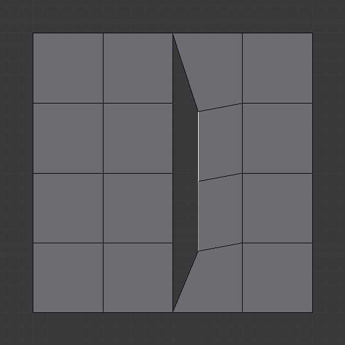
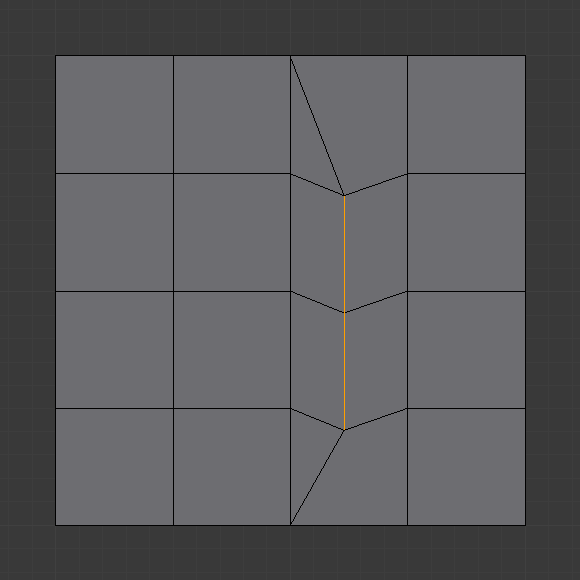

Інструменти Вершин -- Vertex Tools¶
Орієнтир -- Reference
| Mode: | Edit Mode |
|---|---|
| Menu: | |
| Hotkey: | Ctrl-V |
Ця сторінка охоплює багато інструментів з меню . Це засоби, що працюють головним чином на виділеннях вершин, однак, деякі з них також працюють з виділеннями ребер та граней.
Об'єднання -- Merging¶
Об'єднання Вершин -- Merging Vertices¶
Орієнтир -- Reference
| Mode: | Edit Mode |
|---|---|
| Panel: | |
| Menu: | , |
| Hotkey: | Alt-M |
Цей інструмент дозволяє вам об'єднувати, зливати усі виділені вершини в єдину одну, розчиняючи всі інші. Ви можете вибирати локацію результатної вершини у спливному меню, що з'являється після запуску цієї команди:
- До Першої -- At First
- Доступно тільки у режимі виділу Vertex, поміщає результатну вершину у локацію першої з виділених.
- До Останньої -- At Last
- Доступно тільки у режимі виділу Vertex, поміщає результатну вершину у локацію останньої з виділених (активної вершини).
- До Центра -- At Center
- Доступно у всіх режимах виділу, поміщає результатну вершину у центр виділення.
- До Курсора -- At Cursor
- Доступно у всіх режимах виділу, поміщає результатну вершину у поточне місце 3D Курсора.
- Стягнення -- Collapse
- Кожен острів виділених вершин (з'єднаних виділеними ребрами) буде об'єднано в його серединному центрі і залишиться по одній вершині на острів. Це також доступно через опцію меню «Сіть > Ребра > Стягнення» -- ...
Об'єднання вершин, звичайно ж, також видаляє деякі ребра та грані. Але Blender буде робити все можливе для збереження ребер та граней, що лише часткове задіяні в об'єднанні.
Ghi chú
At First та At Last залежить від збереженого порядку виділення: порядок виділення втрачається, наприклад, після зміни режиму виділу.
- UV-ти -- UVs
- Якщо увімкнено UVs на панелі Оператора, то координати розкладки UV, якщо наявні, будуть скоректовані для запобігання спотворенню зображення.
АвтоОб'єднання при Правці -- AutoMerge Editing¶
Орієнтир -- Reference
| Mode: | Edit Mode |
|---|---|
| Menu: |
Меню Mesh містить перемикальну опцію: «АвтоОб'єднання при Правці» -- AutoMerge Editing. При увімкненні, як тільки вершина пересунеться ближче до іншої на відстань, значення якої знаходиться у межах устави Limit (), то вони автоматично об'єднаються. Ця опція впливає лише на інтерактивні операції (підправлення, зроблені на панелі Оператора, також вважаються інтерактивними). Якщо точне місце, куди пересувається вершини, містить більше ніж одну інші вершини, то об'єднання буде здійснене між пересунутою вершиною та однією з тих.
Вилучити Дублі -- Remove Doubles¶
Орієнтир -- Reference
| Mode: | Edit Mode |
|---|---|
| Panel: | |
| Menu: | , |
Remove Doubles -- це корисний засіб для спрощення сіті шляхом об'єднання вершин у виділеному, які є ближчими одна до одної, ніж визначена відстань. Альтернативним шляхом спростити сіть є вживання модифікатора «Спрощення» -- Decimate Modifier.
- Відстань Об'єднання -- Merge Distance
- Задає поріг відстані для об'єднання вершин, в Одиницях Blender.
- Невиділене -- Unselected
- Дозволяє вершинам у виділенні бути об'єднаними з невиділеними вершинами. При вимкненні, виділені вершини будуть об'єднані лише з іншими виділеними.
Відокремлення -- Separating¶
Розрив -- Rip¶
Орієнтир -- Reference
| Mode: | Edit Mode |
|---|---|
| Menu: | |
| Hotkey: | V |
Rip створює «дірку» у сіті, роблячи копію виділених вершин та ребер зі збереженням з'єднання до сусідніх не-виділених вершин, так що нові ребра є границями граней на одній стороні, а старі -- границями граней на іншій стороні розриву.
Приклади¶

Виділена вершина. |

Отвір, створений після використання Rip на вершині. |

Виділені ребра. |

Результат розриву виділення ребер. |

Результат операції Rip. |
{kind=link}
{kind=link}
Обмеження¶
Rip працює лише, коли виділені ребра та/або вершини. Використання цього засобу, коли виділеними є грань (явно чи неявно), поверне повідомлення про помилку "Cannot perform ripping with faces selected this way" -- «Неможливо здійснити розривання з гранями, виділеними таким чином». Якщо ваш виділ включає деякі ребра або вершини, що не знаходяться «між» двома розгортними -- manifold гранями, то це також дасть збій з повідомленням "No proper selection or faces include" -- «Немає належного виділу або включено грані».
Розрив із Заповненням -- Rip Fill¶
Орієнтир -- Reference
| Mode: | Edit Mode |
|---|---|
| Menu: | |
| Hotkey: | Alt-V |
Rip Fill працює так само, як і вище згаданий інструмент Rip, але замість залишення дірки, він заповнює проміжок геометрією.
|
Виділені ребра. |

Результат від Rip Fill. |
{kind=link}
Розділення -- Split¶
Орієнтир -- Reference
| Mode: | Edit Mode |
|---|---|
| Menu: | |
| Hotkey: | Y |
Розділяє (роз'єднує) виділення від решти сіті. Граничне ребро будь-якого з невиділених елементів дублюється.
Зауважте, що «копія» залишається точно у тій же позиції, що й оригінал, а тому ви повинні пересунути її за допомогою G, щоб її чітко бачити...
Розшир Вершинами -- Extend Vertices¶
Орієнтир -- Reference
| Mode: | Edit Mode |
|---|---|
| Menu: | |
| Hotkey: | Alt-D |
Цей інструмент бере будь-яку кількість виділених вершин та дублює і перетягує їх уздовж найближчого ребра за мишкою. При розширенні петлею ребер, розшир відбувається на вершинах у кінцевих точках такої петлі. Подібна поведінка в інструмента Extrude, але це створює N-бічник.
Він допомагає легко додавати деталі до наявних ребер.
Відокремлення -- Separate¶
Орієнтир -- Reference
| Mode: | Edit Mode |
|---|---|
| Menu: | |
| Hotkey: | P |
Засіб Separate буде розділяти -- Split елементи сіті в інший сітьовий об'єкт.
- Виділення -- Selection
- Відокремлює виділені елементи.
- За Матеріалом -- By Material
- Відокремлює фрагменти на основі призначених різним граням матеріалів.
- За Незв'язаними Частинами -- By loose parts
- Створює по одному об'єкту для кожного незалежного (роз'єднаного) фрагмента оригінальної сіті.
Ковзання Вершини -- Vertex Slide¶
Орієнтир -- Reference
| Mode: | Edit Mode |
|---|---|
| Panel: | |
| Menu: | |
| Hotkey: | Shift-V |
Vertex Slide will transform a vertex along one of its adjacent edges. Use Shift-V to activate tool. The nearest selected vertex to the mouse cursor will be the control one. Move the mouse along the direction of the desired edge to specify the vertex position. Then press LMB to confirm the transformation.
- Рівно -- Even E
- By default, the offset value of the vertices is a percentage of the edges length along which they move. When Even mode is active, the vertices are shifted by an absolute value.
- Flipped F
- When Flipped is active, vertices move the same distance from adjacent vertices, instead of moving from their original position.
- Затиск -- Clamp Alt або C
- Перемикає затискання ковзання у межах розширу ребер.

Виділена вершина. |

Позиціонування вершини інтерактивно. |

Перерозташована вершина. |
Згладити на Вершині -- Smooth Vertex¶
Орієнтир -- Reference
| Mode: | Edit Mode |
|---|---|
| Panel: | |
| Menu: | , |
Це застосує один раз інструмент «Згладження» -- Smooth Tool.
Опукла Оболонка -- Convex Hull¶
Орієнтир -- Reference
| Mode: | Edit Mode |
|---|---|
| Menu: |
Оператор Convex Hull приймає хмару точок як увід та виводить опуклу оболонку навколо цих вершин. Якщо увід містить ребра або грані, що лежать на такій опуклій оболонці, вони можуть також бути використані у виводі. Цей оператор може використовуватися також як засіб мостіння.

Input mesh, point cloud, and Convex Hull result.
- Видалити Невживане -- Delete Unused
- Вилучає вершини, ребра та грані, що були виділені, але не використані як частина оболонки. Зверніть увагу, що вершини та ребра, які використовуються іншими ребрами та гранями, що не є частиною виділу, не будуть видалені.
- Вжити Наявні Грані -- Use Existing Faces
- При можливості використовує для уводу наявні грані, що лежать на оболонці. Це дозволяє виводу опуклої оболонки містити скоріше N-бічники, а не трикутники (або чотирибічники, якщо увімкнена опція Join Triangles).
- Зробити Отвори -- Make Holes
- Видаляє ребра та грані в оболонці, що також були частиною уводу. Корисно у таких випадках, як мостіння для видалення граней між наявною сіттю та опуклою оболонкою.
- Сполучити Трикутники -- Join Triangles
- Сполучає суміжні трикутники у чотирибічники. Має усі такі ж властивості як і оператор Tris to Quads (ліміт кута, порівняти UV-ти тощо).
- Max Face Angle, Max Shape Angle, Compare
- See Трикутники у Чотирикутники -- Triangles to Quads.
Зробити Приріднення до Вершин -- Make Vertex Parent¶
Орієнтир -- Reference
| Mode: | Edit Mode |
|---|---|
| Menu: | |
| Hotkey: | Ctrl-P |
Це приріднить інші виділені об'єкт(и) до виділених вершин/ребер/граней, як описано тут -- here.
Додання Зачеплення -- Add Hook¶
Орієнтир -- Reference
| Mode: | Edit Mode |
|---|---|
| Menu: | |
| Hotkey: | Ctrl-H |
Додає модифікатор «Гачок» -- Hook Modifier (використовуючи для цього новий порожняк Empty або поточно виділений об'єкт), пов'язуючи його з виділенням. Зауважте, що хоча ця дія і показується у меню історії, вона не може бути скасована у режимі Edit Mode -- оскільки вона залучає інші об'єкти...
Коли поточний об'єкт не має жодних асоційованих гачків, тільки 2 перші опції будуть показуватися у цьому меню.
- Зачепити за Новий Об'єкт -- Hook to New Object
- Створює новий модифікатор Hook для активного об'єкта та призначає його для виділених вершин; він також створює порожняк у центрі цих вершин, до якого він їх зачіпляє.
- Зачепити за Виділений Об'єкт -- Hook to Selected Object
- Робить, що й Hook to New Object, але натомість зачіплювання вершин до нового порожняка, він зачіпляє їх до виділеного об'єкта (якщо такий існує). Тут повинен бути тільки один виділений об'єкт (окрім редагованої сіті).
- Зачепити за Виділену Кістку Об'єкта -- Hook to Selected Object Bone
- Робить так само, як і Hook to New Object, але задає останню виділену кістку у також виділеній арматурі як ціль для модифікатора.
- Призначити у Зачеплення -- Assign to Hook
- Виділені вершини призначаються у вказане зачеплення. Щоб це сталося, показується список зачеплень, асоційованих з цим об'єктом. Усі невиділені вершини вилучаються з нього (якщо вони були призначені у таке конкретне зачеплення). Одна вершина може бути призначена у більше, ніж одне, зачеплення.
- Вилучити Зачеплення -- Remove Hook
- Вилучає вказане зачеплення (з показуваного списку) з даного об'єкта: конкретний модифікатор Hook вилучається зі стеку модифікаторів.
- Виділити Зачеплення -- Select Hook
- Виділяє усі вершини, призначені у вказане зачеплення (зі списку зачеплень).
- Скинути Зачеплення -- Reset Hook
- Це еквівалент кнопці Reset на панелі конкретного модифікатора Hook (вибране зі списку зачеплень).
- Перецентрувати Зачеплення -- Recenter Hook
- Це еквівалент кнопки Recenter на панелі конкретного модифікатора Hook (вказане у списку зачеплень).
Змішання З Форми -- Blend From Shape, Поширити Форму -- Propagate Shapes¶
Орієнтир -- Reference
| Mode: | Edit Mode |
|---|---|
| Menu: | and |
Ці опції стосуються ключів форм -- shape keys.
- Поширити Форму -- Shape Propagate
- Застосовує локації виділених вершин до усіх інших ключів форм.
- Змішання З Форми -- Blend From Shape
- Змішує дану форму з ключем форми.